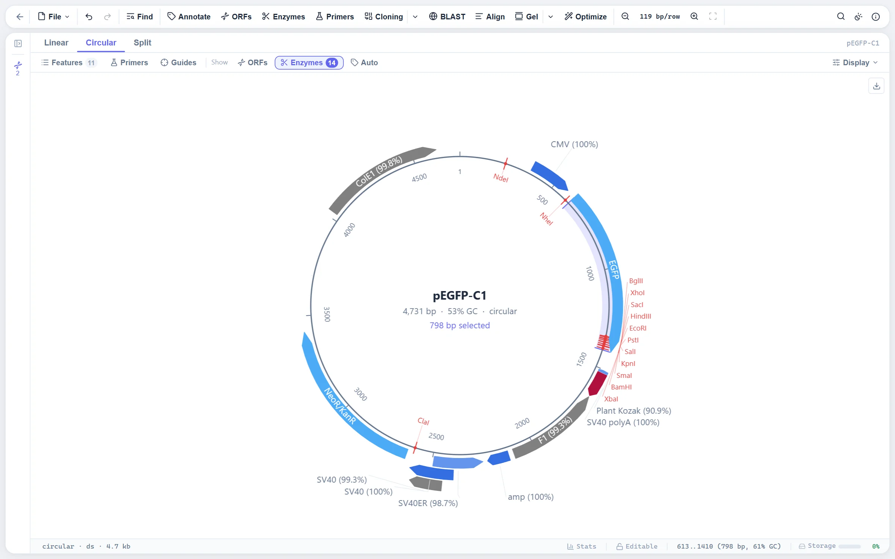
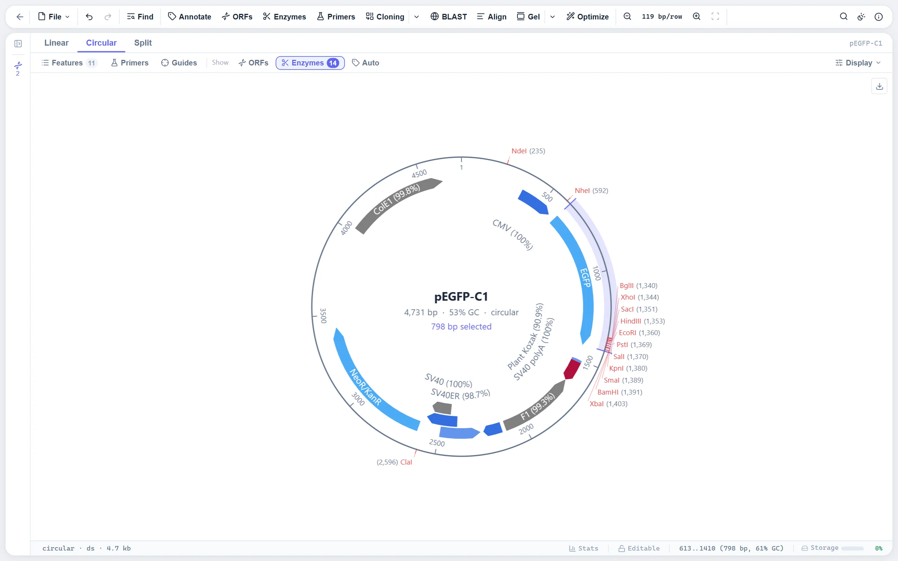

What the map shows
The circular view draws the sequence as a ring. Around it, on rings of their own:
- Features, stacked so that overlapping ones never cover each other, with an arrow for the strand and the name written in the arc when it fits.
- Cut sites of the enzymes you have switched on in the enzyme panel, each with a mark on the backbone and its name. The enzyme set comes from REBASE, with overhangs, methylation sensitivity and suppliers.
- Primer binding sites from your primer library, found on the sequence automatically.
- Dam and Dcm methylation sites (GATC and CCWGG), when switched on, so you can see which cuts a methylated prep will block.
- GC content and GC skew as a ring, sampled into a fixed number of windows (one per half degree) rather than a fixed window size, so a 3 kb plasmid and a 5 Mb genome cost the same to draw.
- ORFs and coverage as further tracks, and a legend.
A linear sequence is drawn on the same ring, broken at the origin with an end bar on each side, so it does not read as a circle. The map view, the split view (sequence beside map), the cloning workspace, the explorer thumbnails and the PDF export all draw from the same code, so they always agree.

Two layouts
The Display menu offers two ways to arrange the map, independent of the style, so any style can be drawn either way.
Features outside the backbone
The default. Feature arcs sit on rings outside the backbone. A feature name that does not fit inside its own arc goes inside the ring on tiers, or outside with a leader line, depending on the style. Ruler numbers and cut-site names share one tier map inside the circle, lower tiers filled first, and a name pushed inward gets a leader back to the backbone.
Sites outside
The ring layout many cloning tools draw: features inside the backbone, on rings stepping inward, and every cut site named outside with its position beside it, BamHI (975) right of the circle and (975) BamHI left of it, so the name is always the end the leader reaches. Feature names that fit their arrow are written in it; the rest are written curved just inside the innermost ring, centred on their feature, with at most two names stacked at any spot. There are no leader lines inside the ring, since a line from a feature to a name further in would run through the names between.

How the names are placed
Most of the work in a plasmid map is in the labels. Three rules hold on every map:
- Nothing is written off the canvas. A name that would climb off the top or bottom edge is held at the edge and spread sideways instead, and names are kept inside the left and right edges whichever way the text runs.
- No leader crosses another, and no leader runs through a name. Names hung round the circle are horizontal text touching a circle just outside the ticks, in the order of their sites, so their leaders are chords that cannot cross. Where a check fails, the circle moves out a few pixels and the side is laid out again.
- Every placed name is checked against every other, not only against those on its own tier, since a long name on an outer tier reaches back under a short one further in.
Down each side of the circle the names are spread as near their own sites as non-overlapping names allow. That is a least-squares fit, solved by pooling neighbours that push into each other into one block and centring each block on its sites (pool adjacent violators, the standard method for isotonic regression). A side that cannot hold every name is thinned where it is most crowded, sites before feature names, and a site you chose or the one under the pointer last. A hundred and fifty sites on a large map lay out in a few milliseconds.
Crowded spots. A multiple cloning site, a run of five or more cut sites each closer to the next than a row of text, or three or more feature names bunched together, is named beside the circle rather than on the inner tiers, where such names used to be turned every which way or dropped. The names are split by side, hung round the circle where they fit, and listed in columns beside the stack where the circle would push them too far out. The order round the circle, which for a cloning site is the site's own order, is kept wherever it leaves no two leaders crossing.
What is left to the hover card. A cut-site name is no use shortened (EcoR… could be several enzymes), so a site with no room for its whole name is left to its hover card, unless it is a site you chose, which always stays named. A feature name wider than the room beside it is shortened with an ellipsis. On a small map, under 500 px across as in the split view, a feature whose arc is shorter than 24 px gets no name outside the circle, since those names were most of the clutter. Hovering it still names it.
Text grows with the map. Past 600 px across its shorter side, names, ruler numbers and the title scale up in proportion, to half as large again at 900 px, and no further, so a figure exported at full size does not turn into a poster of names. Below 600 px the style's own sizes are used, and crowding is met with placement, not smaller letters: the cut-site names are already at 9 px, about as small as text stays readable.
Styles
Four presets set the backbone radius, feature fill opacity, outline colour, fonts and where feature names go when they do not fit inside their own arc:
| Style | Use for |
|---|---|
| Modern | The default: solid features, names outside the ring, a subtle ruler. |
| Classic | A heavier backbone, feature names inside the ring on leader lines. |
| Minimal | No ruler or cut-site names, thin bars. For slides. |
| Publication | White background and black ink whatever the theme, for a figure that prints. |
Feature colours are part of the file: a GenBank or SnapGene colour comes in and goes back out unchanged, and the map draws it as given. Base colours follow one convention across the whole editor.
Export a figure that matches the screen
The map is built in two passes. A layout pass turns the document into a backend-neutral display list (arcs, labels, leader lines, ticks), using only a text-measurement callback. An emitter then walks that list: one issues Canvas 2D calls for the screen, the other writes SVG. Because both consume the same list with the same measurer, the exported figure matches the screen down to the label positions.
- SVG writes real
<text>elements, with curved feature names on<textPath>, so the figure stays editable and searchable in Illustrator or Inkscape. - PNG is rendered at 3x, roughly 300 dpi for a figure placed at 2.5 inches.
- PDF puts the map on its own page, with the sequence, a feature table and an enzyme table as further pages if you want them.
Both exports render at fit scale whatever the zoom on screen, so a figure is never cropped to the viewport you happened to be looking at. The Publication style gives the fixed black-on-white palette a journal expects.
Working on the map
The map is a place to work, not only a picture. Click a feature to select it, drag round the ring to select a range (in the direction the pointer turned, so a drag past the origin keeps going), and right-click for the same actions as in the sequence view. Ctrl+wheel zooms around the pointer, with a visible button to reset to fit. Clicking a cut site puts the caret there, and in a crowded cloning site the name under the pointer is the first thing hit, since the layout has already spread the names apart.
In the cloning workspace, each part is shown on its own map and you click the sites to cut it; the reaction strip then shows what goes into the ligation. The maps there fill their panel, so the room a wide panel has goes to the names.
Where to find it
Open or drag in a file, then switch to the map view or the split view with the view buttons in the toolbar. The Display menu holds the layouts, the styles and the rings (enzyme sites, ORFs, GC, methylation). Export gives SVG, PNG and PDF.
Files: GenBank, SnapGene (.dna), Geneious, EMBL, FASTA (no features) and GFF3, or a record fetched by accession from NCBI. See the formats.
Limits
- A name with no room on the map is left to its hover card rather than drawn over another; the thinning order above decides which.
- The Publication style ignores the theme; the other three follow it, so a dark-theme screenshot is not a print figure. Export in Publication for print.
- The map is tested on sequences to around 5 Mb. On a genome that size the features and the GC ring still draw, but a map of thousands of features is a picture of density, not of names.